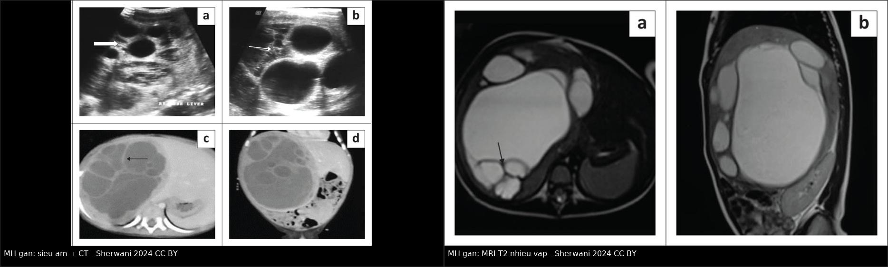
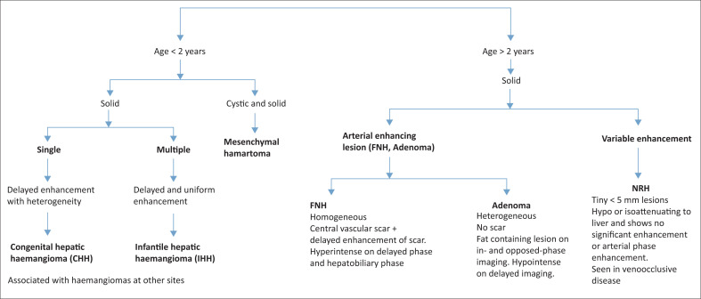
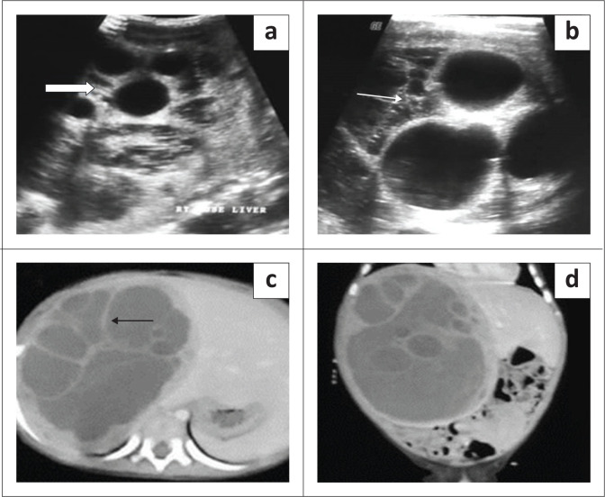
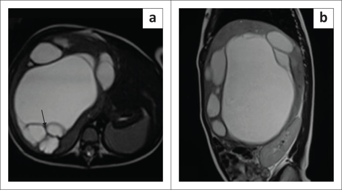
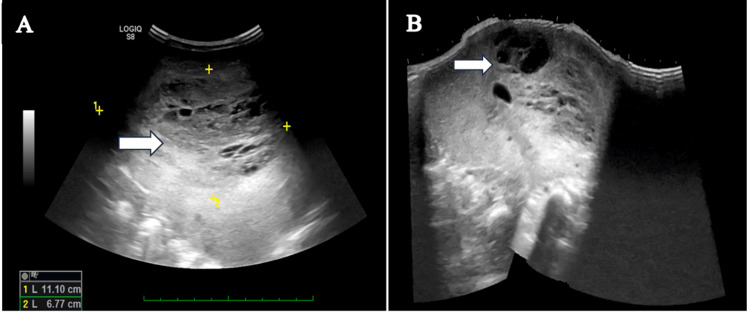
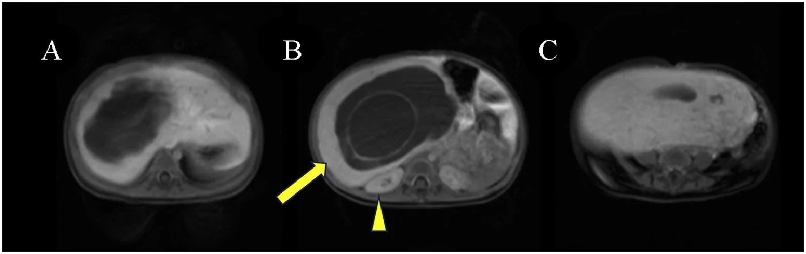
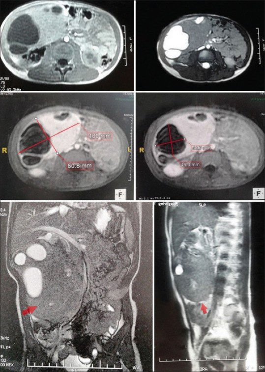

664 — U mô đệm lành của gan ở trẻ: theo dõi bảo tồn hay mổ & phổ MH → UESL / Hepatic mesenchymal hamartoma: observe or resect?
Tags: pattern:khoi-gan-nhi pattern:khoi-nang-dac vung:gan score:PRETEXT protocol:US-CT-MRI-gan-nhi incidentaloma:khoi-gan-nhi
Mức chắc chắn (certainty): tổng hợp y văn (literature synthesis) — tổng hợp review + ca nguyên văn có ảnh CC BY/CC BY-NC-SA (ghi PMCID từng ảnh), đối chiếu bài 663/665/667 trong repo; chưa gắn một ca nguyên văn duy nhất.
1. Tổng quan — vì sao một "khối nang" lành lại có thể là u, và vì sao không được chủ quan
- Bệnh học (pathology): u mô đệm lành của gan (hepatic mesenchymal hamartoma — MH) là một hamartoma — khối mô loạn tổ chức gồm mô đệm myxoid/collagen, ống mật bất thường giãn, mạch máu và các đảo tế bào gan. U không có vỏ (unencapsulated), phát triển bằng cách tích dịch trong các khoang nang → có thể to rất nhanh và rất lớn. Về mô học, mô đệm myxoid ~50%, collagen/hyalin ~47%; tế bào gan thường ở ngoại vi u.
- Dịch tễ (epidemiology):
- Là u gan lành tính phổ biến thứ hai sau u mạch máu nhũ nhi (infantile hepatic hemangioma — IHH), chiếm ~5–8% các u gan nguyên phát ở trẻ và 18–29% trong nhóm u gan lành.
- 80% chẩn đoán < 2 tuổi, hầu hết < 5 tuổi; nam:nữ ~3:2; ~75% ở thùy phải; tới 20% có cuống (pedunculated).
- Có thể phát hiện trước sinh (quý III) và có thể kèm phù thai (hydrops fetalis), đa ối, bất thường tim thai (tràn dịch màng tim, giãn tâm thất).
- TẠI SAO hình ảnh như vậy (cơ chế vật lý):
- Nang: dịch trong ống mật giãn/lymphatic/pseudocyst → trống âm trên siêu âm, đậm độ nước trên CT, T1 tối – T2 rất sáng trên MRI. Dịch giàu protein có thể làm T2 không sáng đồng nhất.
- Vách và mô đệm xơ: collagen/hyalin ít nước → T2 tối, ngấm thuốc thì muộn; đây là lý do vách nổi rõ trên nền dịch sáng.
- Thành phần myxoid: giàu nước → T2 sáng; không hạn chế khuếch tán mạnh như u đặc tế bào.
- Không có vỏ → bờ có thể lobulated nhưng vẫn bờ rõ; u lớn chèn ép tĩnh mạch chủ dưới (IVC), gây phù chi dưới, chèn cơ hoành gây khó thở; vỡ nang → dịch quanh gan dưới bao.
- Doppler: ít mạch máu trong u — khác IHH (tăng mạch rõ).
- AFP — điểm dễ sai nhất: AFP thường bình thường, nhưng có thể tăng nhẹ do tế bào gan/ống mật nằm trong mô đệm myxoid. Ca nguồn ghi AFP 306 ng/mL (tham chiếu < 8,78 ng/mL**) và **GGT 111,36 U/L** ở bé trai 2 tuổi. Ngược lại, **hepatoblastoma** thường **AFP > 10.000 ng/mL kèm vôi hóa thô 40–50%.
- Di truyền — vì sao phải theo dõi lâu dài: phần lớn bất thường tế bào di truyền tập trung ở 19q13.4, chứa cụm microRNA C19MC. UESL (undifferentiated embryonal sarcoma of the liver) — sarcoma phôi gan chưa biệt hóa — có cùng bất thường 19q13/C19MC; phân tích 14 ca UESL thấy 10/13 có biến thể cấu trúc vùng 19q13, 7/7 mẫu giải trình tự miRNA có C19MC tăng > 100 lần, và TP53 đột biến/mất ở mọi u đánh giá được có C19MC tăng. Vì vậy MH hiếm khi chuyển dạng ác nhưng có thật, và chuyển dạng được mô tả như từng bước: C19MC hoạt hóa + mất TP53.
- Diễn tiến tự nhiên: nhiều ca tăng nhanh do tích dịch; một số báo cáo thoái triển tự nhiên nhưng bằng chứng yếu (xem mục 5). Tổng quan hệ thống 95 ca (2000–2022): 85 ca mổ vs 10 ca không mổ; biến chứng 17% vs 20%, tử vong 6% vs 10%; không khác nhau về giới/thùy/kích thước. Kết luận: cắt u hoàn toàn vẫn là chuẩn khi còn đủ nhu mô gan lành; các báo cáo "theo dõi thành công" có thời gian theo dõi ngắn và bằng chứng mô học không đầy đủ.
2. Mẫu hình + chẩn đoán phân biệt theo tuổi và hình thái (gamut)
- Theo tuổi (khối gan ở trẻ):
- < 6 tháng: IHH/CHH, MH (có thể bẩm sinh), hepatoblastoma bẩm sinh (hiếm), di căn neuroblastoma, nang đường mật.
- 6 tháng – 3 tuổi: MH, hepatoblastoma, IHH, u nội mô mạch máu (hemangioendothelioma), u rhabdoid ác tính (malignant rhabdoid tumor — MRT). Trong một cohort 69 ca u gan không-hepatoblastoma, nhóm 6 tháng–3 tuổi có MRT 25,0%, MH và hemangioendothelioma mỗi loại 18,7%.
- 3–10 tuổi: hepatoblastoma (thể lớn tuổi), HCC, UESL (đỉnh 6–10 tuổi), MH (hiếm, tới 5 tuổi).
- > 10 tuổi: HCC, UESL, FNH, adenoma.
- Theo hình thái:
- Chủ yếu nang, nhiều vách: MH (điển hình), nang sán (hydatid), u nhầy đường mật (biliary mucinous cystic neoplasm — MCN), nang ống mật chủ, lymphangioma, nang đôi tiêu hóa.
- Hỗn hợp nang–đặc: MH, UESL ("giả nang" nhưng phần đặc thật), hepatoblastoma có hoại tử/xuất huyết, MRT.
- Đặc hoàn toàn: hepatoblastoma, HCC, FNH, adenoma, thể đặc của MH (hiếm) — dễ nhầm nhất.
- Gợi nhớ "MH": Multiseptated (nhiều vách) · Hepatocytes/Myxoid (tế bào gan trong mô đệm myxoid) · < 2 tuổi · Hypovascular (ít mạch) · Hydrops (có thể phù thai).
- Gợi nhớ "UESL": Unilocular/pseudocystic (giả nang) · Elevated age 6–10 tuổi · Solid stroma (phần đặc thật, ngấm muộn) · Liver + AFP thường bình thường + không vôi hóa.
3. Bảng so sánh phân biệt (ma trận đối chiếu)
| Thực thể (entity) | Hình ảnh điển hình (US/CT/MRI) | Chốt vào (rule-in) | Chốt loại (rule-out) | Gợi ý xác nhận |
|---|---|---|---|---|
| U mô đệm lành (MH) | US: khối nhiều nang có vách, dịch trống âm, ít mạch trên Doppler; CT: dịch đậm độ nước, vách/solid ngấm; MRI: T2 rất sáng, vách T2 tối, ngấm vách; có thể có dịch quanh gan nếu vỡ | < 2 tuổi + khối nhiều vách + AFP thường + ít mạch + không vôi hóa thô | Vôi hóa thô + AFP > 10.000 ng/mL + ngấm mạnh không đồng nhất → hepatoblastoma; phần đặc lớn ngấm muộn + tuổi 6–10 → UESL | US + MRI gan; AFP/GGT/LFT; MDT; mô học khi không điển hình |
| UESL (sarcoma phôi gan) | Khối lớn, "giả nang" nhưng phần đặc thật, T2 sáng do myxoid, ngấm vỏ/mô đặc thì muộn, có thể xuất huyết/hoại tử; không vôi hóa | 6–10 tuổi + khối giả nang + phần đặc ngấm muộn + AFP bình thường | Nhiều nang thật, vách mảnh, không có phần đặc ngấm → MH; AFP rất cao + vôi hóa thô → hepatoblastoma | MRI đa thì + sinh thiết/cắt u; CT ngực tìm di căn; mô học + IHC |
| Hepatoblastoma | Khối đặc không đồng nhất, hoại tử, vôi hóa thô 40–50%, xâm lấn nhiều phân thùy | 6 tháng–5 tuổi + AFP > 10.000 ng/mL + vôi hóa thô + > 5 cm | AFP bình thường + nhiều nang vách + không vôi hóa → MH | AFP, MRI đa thì, PRETEXT, sinh thiết theo protocol |
| IHH/CHH (u mạch máu) | US: khối tăng hồi âm/không đồng nhất, tăng mạch; CEUS/MRI: ngấm viền nốt → đầy dần trung tâm; CHH có đủ lúc sinh, không tăng | Ngấm viền nốt rồi đầy dần + GLUT-1 (IHH) + xuất hiện sau sinh | Nhiều nang vách + ít mạch + AFP thường → MH; đứng yên từ lúc sinh → CHH | US Doppler, CEUS, MRI động; TSH/fT4; AFP |
| U nhầy đường mật (MCN/biliary cystadenoma) | Nang nhiều vách, dịch đặc, có thể vôi hóa vách; ngấm vách; thường ở người lớn/trẻ lớn | Trẻ lớn/người lớn + nang nhiều vách + CA19-9 tăng | < 2 tuổi + AFP thường + mô đệm myxoid → MH | MRI/MRCP, CA19-9, mô học |
| Nang sán (hydatid) | Nang vỏ dày, có thể nang con, vôi hóa vỏ, không ngấm; dịch tễ vùng chăn nuôi | Dấu hiệu vỏ dày/nang con + huyết thanh học dương | Nhiều nang vách mảnh, có mô đặc ngấm → MH | ELISA/hemagglutination, MRI/CT, dịch tễ |
| Áp-xe gan | Ổ dịch vỏ dày ngấm viền, khí trong ổ, đông đặc quanh | Sốt + đau + bạch cầu tăng + vỏ ngấm viền | Không sốt + nhiều nang vách mảnh + AFP thường → MH | US/CT, CRP, cấy, dẫn lưu |

Trái: siêu âm thang xám (a, b) — khối nhiều nang có vách; CT (c, d) — dịch đậm độ nước, vách ngấm thuốc. Phải: MRI T2 (a, b) — khối tăng tín hiệu mạnh, vách giảm tín hiệu. Nguồn: Sherwani P et al., S Afr J Radiol 2024 (PMC10913176), Fig. 8 & 10, CC BY 4.0; ảnh ghép letterbox giữ nguyên tỷ lệ.Dấu hiệu chốt cần đọc đúng trên từng kỹ thuật
- Siêu âm: đếm số nang, độ dày vách, phần đặc, bật Doppler xem mạch trong u (MH ít mạch). Tìm dịch dưới bao/quanh gan — gợi ý vỡ.
- CT: đo đậm độ dịch (gần 0–20 HU), xem vách/solid ngấm, vôi hóa, mối liên quan IVC/tĩnh mạch gan/ống mật; không dùng CT để khẳng định mô học.
- MRI: T2 là chuỗi tốt nhất — nang sáng, vách tối; DWI giúp phân biệt phần đặc tế bào (UESL/hepatoblastoma) với nang; động học sau tiêm phân biệt ngấm vách (MH) với ngấm mô đặc (u ác).
- AFP + GGT + LFT + đông máu trước mọi can thiệp; CT ngực nếu nghi ác tính.
4. Protocol chụp + thuật toán theo dõi/mổ
- Protocol hình ảnh:
- Siêu âm bụng + Doppler đầu tay (ALARA — trẻ nhỏ).
- MRI gan (T1/T2 fat-sat, DWI/ADC, động học sau tiêm) khi khối lớn, không điển hình, hoặc trước mổ. CT khi MRI không sẵn có/chống chỉ định hoặc cần đánh giá xương–phổi.
- Đo đường kính lớn nhất (3 chiều), % thành phần đặc, số nang, vị trí so với IVC, tĩnh mạch gan, cuống gan, có vỡ/dịch quanh gan.
- Không dùng PRETEXT để phân giai đoạn MH (PRETEXT dành cho hepatoblastoma); với MH, mục tiêu là bản đồ mạch máu – đường mật để chọn cắt u bảo tồn nhu mô hay cắt gan giải phẫu.
- Sinh thiết (biopsy) — không thường quy:
- Chỉ định: khối không điển hình, không mổ được ngay, cần chẩn đoán trước hóa trị, hoặc nghi UESL/ác tính.
- Hạn chế: sai lệch mẫu (sampling error) — MH có thể nằm cạnh ổ UESL; kim nhỏ có thể chỉ lấy mô đệm lành và bỏ sót chuyển dạng. Nếu khối điển hình và cắt được, nhiều trung tâm mổ luôn không sinh thiết.
- Thuật toán xử trí:
- Cắt u hoàn toàn là chuẩn khi còn đủ nhu mô gan lành — bằng chứng hệ thống: 85 ca mổ vs 10 ca không mổ, biến chứng 17% vs 20%, tử vong 6% vs 10%, không khác biệt về giới/thùy/kích thước.
- Kỹ thuật: cắt u bảo tồn (enucleation) nếu khối có cuống/ngoại vi; cắt gan giải phẫu nếu khối trung tâm/lớn; có thể chọc hút dịch nang trong mổ để giảm thể tích và tạo đường mổ.
- Theo dõi bảo tồn (selected cases): chỉ khi không triệu chứng, hình ảnh điển hình, không tăng nhanh, gia đình tuân thủ. Lịch đề xuất thực hành (chưa có guideline riêng cho MH): US lúc 3 tháng, sau đó mỗi 6–12 tháng đến khi ổn định/thoái triển; MRI nếu tăng nhanh hoặc phần đặc thay đổi. Bằng chứng cho cách này yếu — phải giải thích rõ với gia đình.
- Chỉ định mổ ngay: chèn ép IVC/khó thở, đau, vỡ/chảy máu, tăng nhanh, nghi UESL/ác tính, hoặc không loại trừ được hepatoblastoma.
- Nếu UESL: hóa trị tân bổ trợ + cắt R0 (bài 663), không điều trị như MH.
- Theo dõi sau mổ: US/CT/MRI 3–6 tháng rồi hằng năm; theo dõi AFP nếu tăng trước mổ; chú ý tái phát tại chỗ (hiếm) và di căn phổi (nếu chuyển dạng).
flowchart TD
A[Khối gan nang-đặc ở trẻ] --> B{Tuổi + AFP + hình thái}
B -->|Nhũ nhi < 2 tuổi, nhiều vách, AFP thường| C[Nghĩ MH]
B -->|6 tháng-5 tuổi, AFP > 10.000, vôi hóa thô| D[Hepatoblastoma: PRETEXT + hóa trị]
B -->|6-10 tuổi, giả nang, phần đặc ngấm muộn, AFP thường| E[Nghĩ UESL: sinh thiết + hóa trị tân bổ trợ]
C --> F{Không triệu chứng + điển hình + không tăng nhanh?}
F -->|Có| G[Theo dõi: US 3 tháng, sau đó 6-12 tháng + MRI khi thay đổi]
F -->|Không| H[MDT: cắt u bảo tồn hoặc cắt gan giải phẫu]
H --> I{Khối trung tâm/lớn?}
I -->|Không: cuống/ngoại vi| J[Enucleation]
I -->|Có| K[Cắt gan giải phẫu + bảo tồn mạch/đường mật]
J --> L[Theo dõi 3-6 tháng rồi hằng năm]
K --> L
G --> M{Phần đặc tăng / AFP tăng / có triệu chứng?}
M -->|Có| H
M -->|Không| G

Thuật toán của bài nguồn: < 2 tuổi** — khối đặc đơn ổ → CHH; đa ổ → IHH; **nang + đặc → MH**. **> 2 tuổi — khối đặc: ngấm động mạch → FNH/adenoma; ngấm thay đổi → NRH. Nguồn: Sherwani P et al., S Afr J Radiol 2024 (PMC10913176), Fig. 16, CC BY 4.0.5. Biến thể bình thường và cạm bẫy
- AFP tăng nhẹ không loại trừ MH: ca nguồn AFP 306 ng/mL (ref < 8,78) nhưng mô học là MH; ngược lại hepatoblastoma thường > 10.000 ng/mL. Đừng để một con số AFP đẩy thẳng trẻ vào hóa trị.
- MH thể đặc (solid variant) dễ bị đọc là hepatoblastoma/UESL: mô đệm xơ nhiều, ít nang → T2 không sáng, ngấm ít; cần MRI đa thì + mô học.
- "Giả nang" của UESL: phần đặc thật có thể ngấm muộn, T2 sáng do myxoid — không phải nang thật; đừng chọc/fenestration mù (bài 663).
- Nang sán (hydatid): vỏ dày, nang con, vôi hóa vỏ, không ngấm; hỏi dịch tễ và làm huyết thanh học trước khi can thiệp — chọc nang sán có nguy cơ sốc phản vệ.
- "Tự thoái triển" không phải quy luật: các báo cáo theo dõi thành công thường thời gian ngắn, không đủ mô học; đừng hứa với gia đình là "u sẽ tự hết".
- Sai lệch mẫu sinh thiết: kim nhỏ có thể bỏ sót ổ UESL cạnh MH; nếu mổ, lấy mẫu phần đặc và nhiều vị trí.
- Vỡ u: có thể biểu hiện đau bụng cấp + dịch quanh gan; tránh thăm khám thô bạo, hội chẩn ngoại nhi sớm.
- Tăng tín hiệu thì gan–mật (HBP) trên gadoxetate: MH có thể tăng nhẹ tín hiệu HBP do tế bào giống gan còn OATP1B3 trong bào tương — đừng dùng HBP để loại MH hay khẳng định hepatoblastoma; ca nguồn mô tả tín hiệu tăng nhẹ nhưng vẫn thấp hơn nhu mô gan lành.
- MH trước sinh: có thể kèm hydrops, đa ối, bất thường tim thai; cần trung tâm sản–nhi có khả năng can thiệp ngay sau sinh.
- Theo dõi sau mổ: tái phát tại chỗ hiếm nhưng vẫn phải theo dõi; nếu AFP tăng lại hoặc phần đặc mới → nghĩ chuyển dạng/UESL.
6. Tự lượng giác — Blind Quiz
Ca 1 — Bé trai 9 tháng tuổi, bụng to, không sốt. Đọc siêu âm và CT.

- Gợi ý lâm sàng: nhũ nhi, khối bụng lớn; AFP chưa có trong hội chẩn ban đầu.
- Câu hỏi: Mô tả thành phần khối? Chẩn đoán hàng đầu? Cần xét nghiệm/hình ảnh gì tiếp theo?
Bấm để hiện đáp án (findings + chẩn đoán)
- Dấu hiệu: siêu âm (a, b) — khối nhiều nang, vách mảnh, dịch trống âm, không thấy mạch trong u; CT (c, d) — khối lớn thùy phải, dịch đậm độ nước, vách ngấm thuốc, không vôi hóa thô.
- Chẩn đoán: u mô đệm lành của gan (MH) — tuổi < 2, nhiều vách, ít mạch.
- Tiếp theo: AFP, GGT, LFT, đông máu; MRI gan để đánh giá phần đặc và mạch máu; hội chẩn ngoại nhi. Nếu điển hình, không triệu chứng → có thể theo dõi; nếu khối lớn/chèn ép → cắt u bảo tồn nhu mô.
- Nguồn ảnh: Sherwani P et al., S Afr J Radiol 2024 (PMC10913176), Fig. 8, CC BY 4.0.
Ca 2 — Bé gái 2 tuổi, khối bụng lớn. Đọc MRI T2 và phân biệt với nang sán.

- Gợi ý lâm sàng: khối lớn, không sốt; cần hỏi thêm dịch tễ (chó/trang trại) để loại nang sán.
- Câu hỏi: Tín hiệu của dịch và vách nói gì? Hai chẩn đoán phân biệt chính? Xét nghiệm nào giúp loại nang sán?
Bấm để hiện đáp án (findings + chẩn đoán)
- Dấu hiệu: MRI T2 (a, b) — khối lớn thùy phải, dịch tăng tín hiệu rất mạnh, vách giảm tín hiệu (xơ), bờ rõ, không có nang con rõ.
- Chẩn đoán: MH — dịch nang + vách xơ. Phân biệt: nang sán (hydatid) — vỏ dày, nang con, vôi hóa vỏ, không ngấm; MCN — trẻ lớn/người lớn, CA19-9 tăng.
- Xét nghiệm: huyết thanh học hydatid (ELISA/hemagglutination), AFP, CA19-9; MRI/CT đa thì. Nếu hydatid dương → không chọc nang, điều trị albendazole ± PAIR/phẫu thuật.
- Nguồn ảnh: Sherwani P et al., PMC10913176, Fig. 10, CC BY 4.0.
Ca 3 — Bé trai 2 tuổi, bụng to 4 tháng, AFP 306 ng/mL. Đọc siêu âm.

- Gợi ý lâm sàng: không sốt, không sụt cân; AFP tăng nhẹ; GGT 111,36 U/L.
- Câu hỏi: Vì sao không kết luận ngay hepatoblastoma? Hình thái nào ủng hộ MH? Bước tiếp theo?
Bấm để hiện đáp án (findings + chẩn đoán)
- Dấu hiệu: siêu âm — khối lớn đa nang, vách, phần đặc xen kẽ, hình "phô mai Thụy Sĩ" (Swiss-cheese); CT có phần đặc ngoại vi.
- Chẩn đoán: MH có AFP tăng nhẹ — AFP 306 ng/mL (ref < 8,78) do tế bào gan/ống mật trong mô đệm, không đủ để gọi hepatoblastoma. Mô học xác nhận MH, không ác tính.
- Bài học: AFP tăng nhẹ + khối đa nang + ít mạch → vẫn phải nghĩ MH; AFP > 10.000 + vôi hóa thô + khối đặc mới nghiêng hepatoblastoma. Nếu cắt được, mổ + mô học là cách chốt.
- Nguồn ảnh: Venkataraman S et al., Cureus 2024 (PMC11683158), Fig. 1, CC BY 4.0.
Ca 4 — Bé gái 9 tháng, MRI gadoxetate thì gan–mật (HBP). Đọc tín hiệu và cho biết cạm bẫy.

- Gợi ý lâm sàng: khối nang–đặc lớn; đang cân nhắc có phải hepatoblastoma.
- Câu hỏi: Phần đặc trên HBP tăng hay giảm? Có loại được MH không? Vì sao?
Bấm để hiện đáp án (findings + chẩn đoán)
- Dấu hiệu: HBP — phần đặc tăng nhẹ tín hiệu so với trước tiêm nhưng thấp hơn nhu mô gan lành; vách ngấm mảnh; không có cấu trúc tân mạch.
- Chẩn đoán: MH — tế bào giống gan còn OATP1B3 ở bào tương (không định vị màng) nên có thể giữ một ít gadoxetate; đây là cạm bẫy: HBP tăng nhẹ không loại trừ MH, cũng không đủ khẳng định hepatoblastoma.
- Bài học: dựa vào tuổi + AFP + hình thái + động học đa thì, không dựa riêng HBP.
- Nguồn ảnh: Sugie T et al., Radiol Case Rep 2026 (PMC13571136), Fig. 4, CC BY 4.0.
Ca 5 — Bé gái 4 tuổi, khối bụng tình cờ, AFP 1,45 IU/mL. Đọc siêu âm và MRI.

- Gợi ý lâm sàng: khối lớn thùy phải, không triệu chứng; AFP bình thường.
- Câu hỏi: Vì sao MH vẫn có thể gặp ở 4 tuổi? Chọn theo dõi hay mổ? Yếu tố nào quyết định?
Bấm để hiện đáp án (findings + chẩn đoán)
- Dấu hiệu: siêu âm — khối hỗn hợp đặc–nang, nang lớn nhất 58 × 50 mm, dịch trống âm, không mạch; MRI — khối lớn, phần đặc và nang, chèn ép cấu trúc lân cận, không xâm lấn mạch.
- Chẩn đoán: MH ở trẻ 4 tuổi (hiếm nhưng có; 80% < 2 tuổi). AFP 1,45 IU/mL bình thường.
- Xử trí: khối lớn, có phần đặc, không loại trừ hoàn toàn u ác → cắt u bảo tồn nhu mô + mô học. Nếu chọn theo dõi, phải US 3 tháng/lần và mổ khi phần đặc tăng/triệu chứng.
- Nguồn ảnh: Tlili S et al., Afr J Paediatr Surg 2023 (PMC10756409), Fig. 2, CC BY-NC-SA 4.0 (giữ nguyên bản, không ghép).
Bài liên quan chéo
- 600 – Tổng quan Hệ Nhi khoa (bảng DDx khối gan nhi)
- 665 – Khối u gan ở trẻ em: hepatoblastoma, hemangioma, hamartoma & HCC
- 667 – U mạch máu gan ở trẻ & điều trị nội khoa
- 663 – Sarcoma phôi gan chưa biệt hóa (UESL) & u gan hiếm ở trẻ
- 626 – Viêm tụy cấp ở trẻ (DDx đau bụng + khối)
- 630 – U bụng nhi: neuroblastoma vs Wilms
- 139 – Sán lá gan (hydatid): phân độ WHO 2010
Ảnh
- Tên file
664_mh-gan_<modality>_PMC...; nguồn + giấy phép từng ảnh trongimages/CREDITS.md. - Ảnh CC BY được ghép đối chiếu (
composite_mh-gan-us-ct-vs-mri.jpg, letterbox giữ tỷ lệ). Ảnh CC BY-NC-SA (PMC10756409) giữ nguyên bản, không ghép. - Không tải Google Images/AuntMinnie; nguồn đóng chỉ dẫn link ở
sources.md.
Không dùng để chẩn đoán độc lập khi chưa có người hướng dẫn.